PANDUAN APLIKASI WIKINUSA
Intro
Anda ingin mengakses berbagai tulisan dalam bahasa Nias? Dengan aplikasi WikiNusa Anda bisa mengakses tulisan di Wikipedia dan di Wikibuku Nias, serta mencari makna kata di Wikikamus Nias.
Cara Menginstal Aplikasi WikiNusa
-
Klik gambar badge Google Play di bawah ini untuk pergi ke Google Play Store:

-
Pastikan Anda melihat aplikasi WikiNusa. Klik pada tombol "Instal". Tunggu sampai selesai dan Anda melihat tombol biru "Buka".
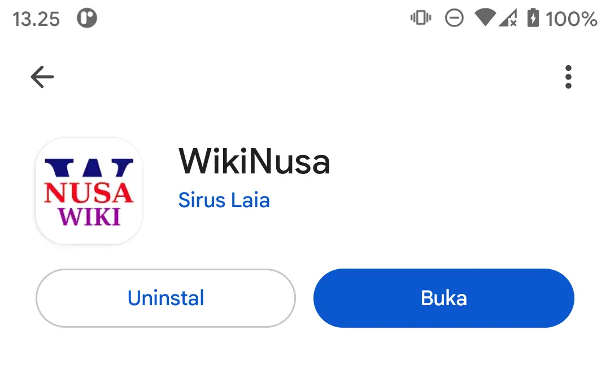
WikiNusa telah terinstal -
Anda bisa langsung menjalankan aplikasi dari sini atau dengan menekan ikon WikiNusa di laci aplikasi smartphone Anda.
 WikiNusa di laci aplikasi
WikiNusa di laci aplikasi
- Selesai.
Menjalankan Aplikasi WikiNusa
- Buka laci aplikasi Anda.
Laci aplikasi
- Temukan dan klik WikiNusa di daftar aplikasi. Anda akan melihat pameran beberapa fitur WikiNusa (halaman onboarding).
-
Slide fitur WikiNusa (berikut adalah slide pengenalan fitur):
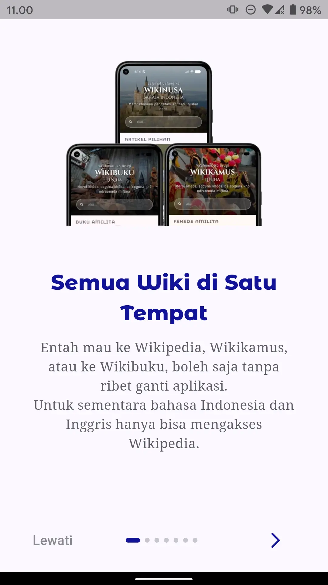
Semua wiki di satu tempat: Wikipedia, Wikikamus, Wikibuku
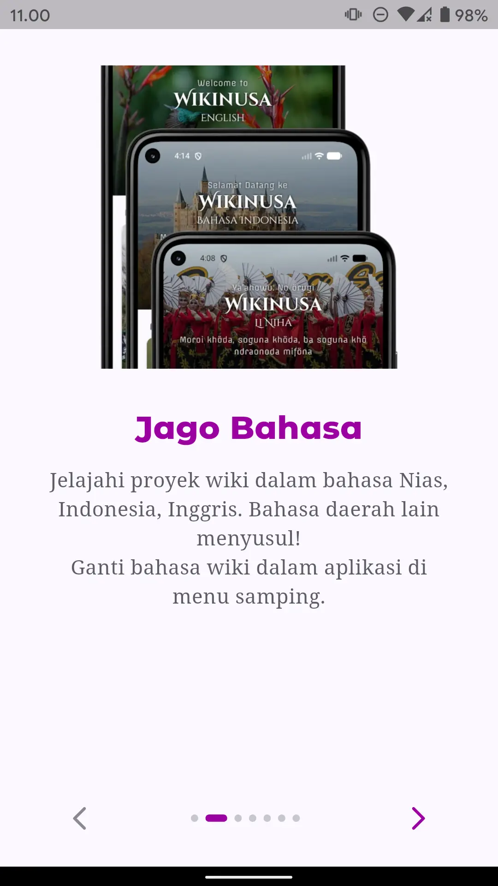
Multi-bahasa: Nias, Indonesia, Inggris (bahasa daerah lain menyusul)
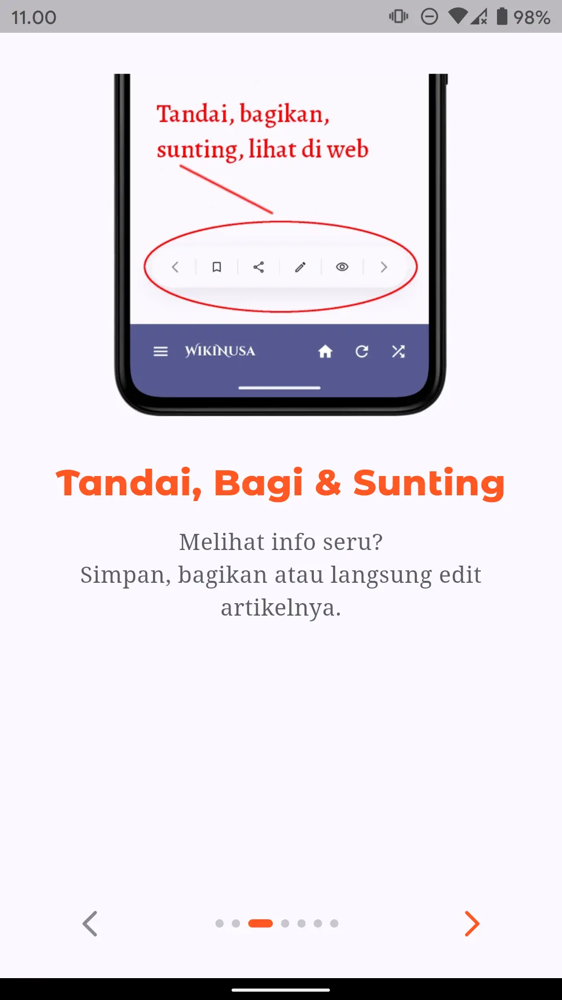
Tandai dan Bagikan tulisan yang Anda sukai, dan Sunting tulisan yang Anda ingin ubah
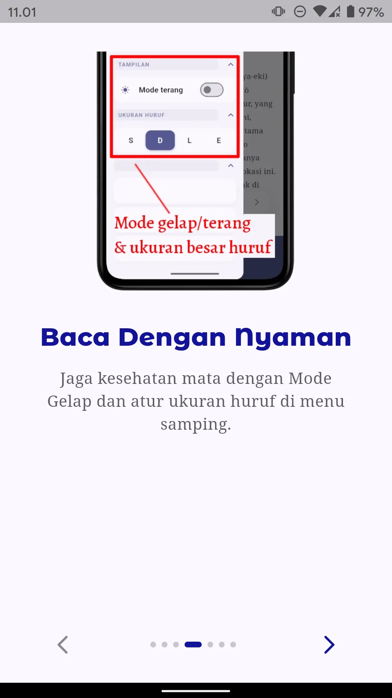
Atur mode gelap/terang serta ukuran besar huruf
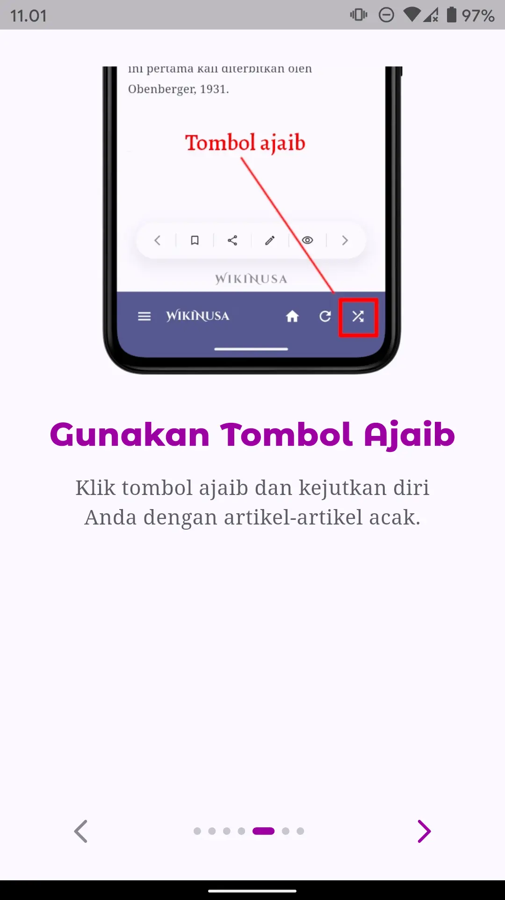
Gunakan Tombol Ajaib untuk menampilkan sembarang tulisan
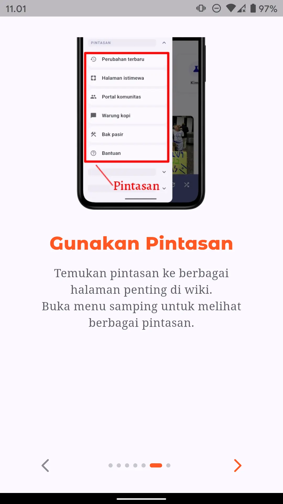
Gunakan pintasan ke halaman paling sering dibutuhkan
-
Pilih bahasa, yang dalam panduan ini menggunakan bahasa Nias.
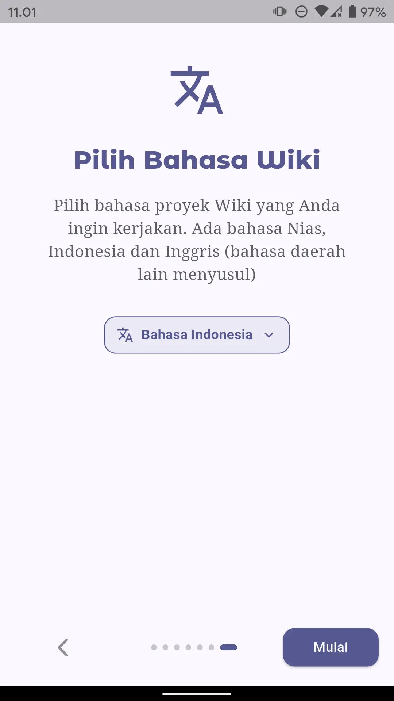
Pilih bahasa Anda
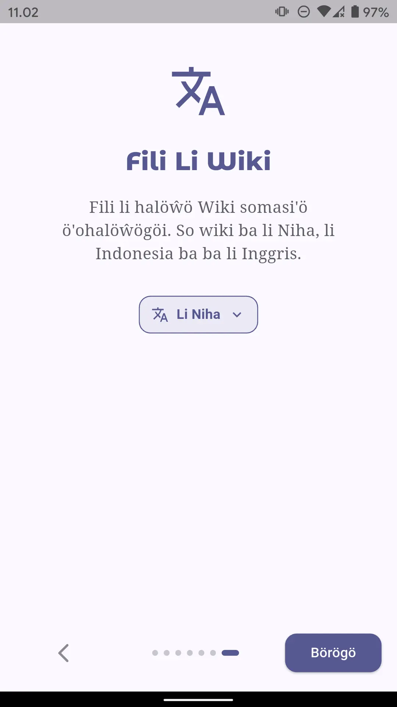
Bahasa Nias terpilih
Mengenal Antar Muka
-
Halaman Depan: Menampilkan layar utama masing-masing platform wiki.
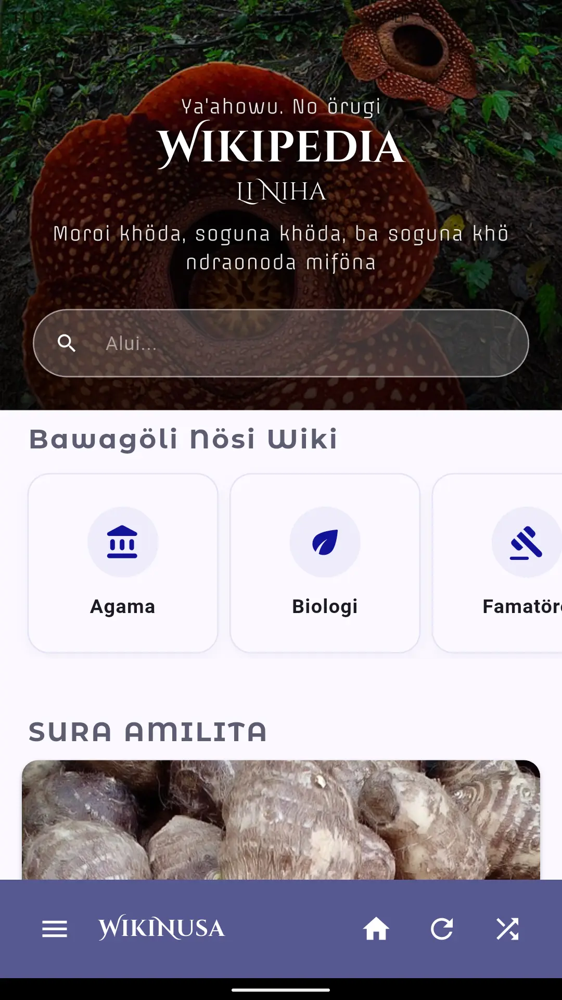
Halaman depan Wikipedia
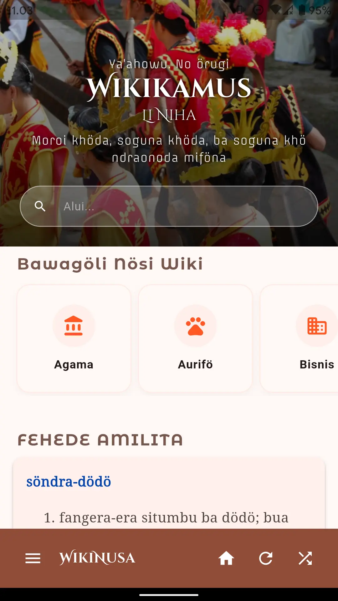
Halaman depan Wikikamus
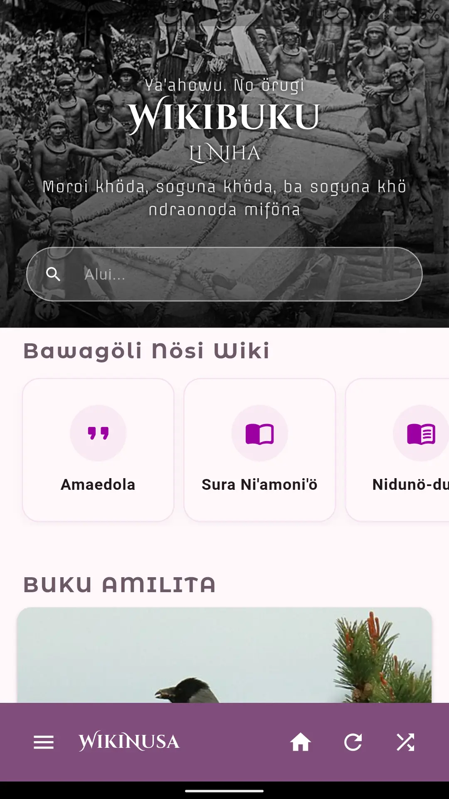
Halaman depan Wikibuku
-
Bilah navigasi bawah: Laci Menu Samping, Halaman Depan, Muat Ulang, dan Tombol Ajaib (menampilkan sembarang tulisan).
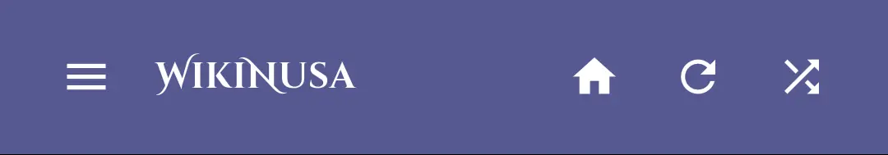
Bilah Navigasi Bawah -
Laci Menu Samping:
KHAI-KHAI SALIOuntuk pintasan cepat,LALA SADOGOuntuk pintasan lainnya,BALÖ HALÖŴÖuntuk berbagai proyek wiki,HALÖWÖ BÖ'Öuntuk berbagai modul,LIuntuk ganti bahasa,SIKHALAuntuk mengganti mode terang/gelap,FA'EBUA HURUFOuntuk mengatur besar huruf,SANDANDRÖSAuntuk info tentang aplikasi, danAE BAKHAuntuk login. Bila belum login akan tampilAE BAKHA, bila telah login akan tampilAE BAERO.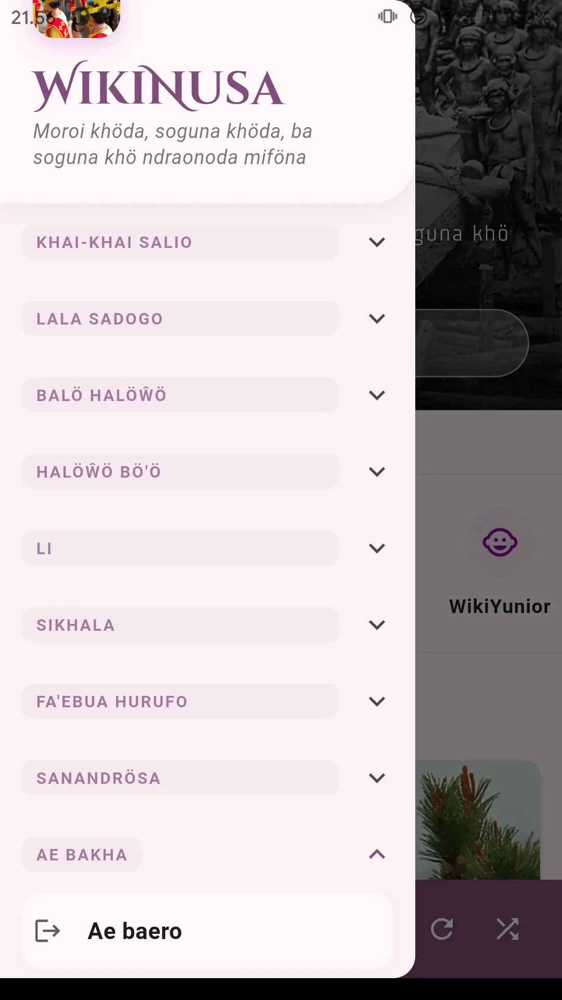
Laci Menu Samping -
Halaman Artikel:
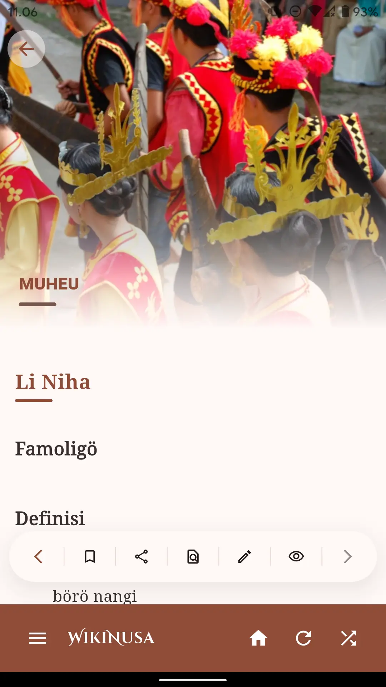
Halaman Artikel - TOMBOL AKSI MENGAMBANG di halaman artikel: Penanda Halaman (Bookmark), Bagikan, Cari, Sunting, dan Lihat di Web (lihat bagian bawah jendela halaman artikel pada gambar di atas).
Login
-
Buka Laci Menu Samping. Tombol untuk login terdapat di bagian paling bawah.
Laci Menu Samping
-
Klik di tombol AE BAKHA. Halaman login Wikimedia akan terbuka.
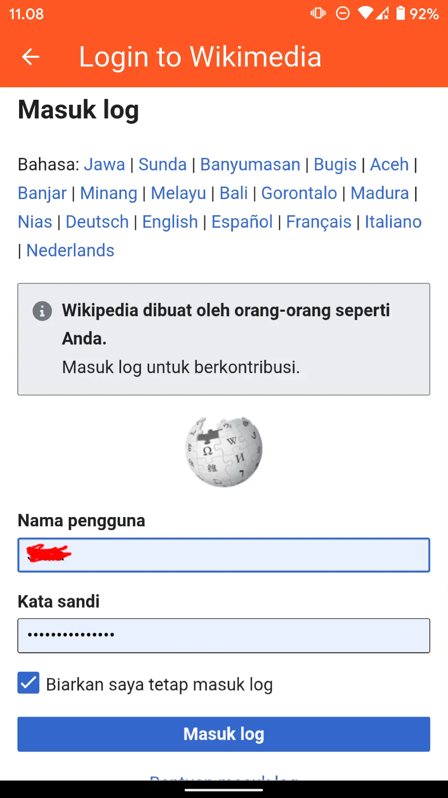
Halaman login Wikimedia - Masukkan nama pengguna (username) dan kata sandi (password) Anda dan tekan tombol MASUK LOG.
- Bila Anda telah mengaktifkan 2FA (otentikasi dua faktor), maka akan tampil halaman untuk memasukkan kode tambahan.
-
Halaman pengizinan akan terbuka untuk memberikan akses otentikasi kepada aplikasi WikiNusa.
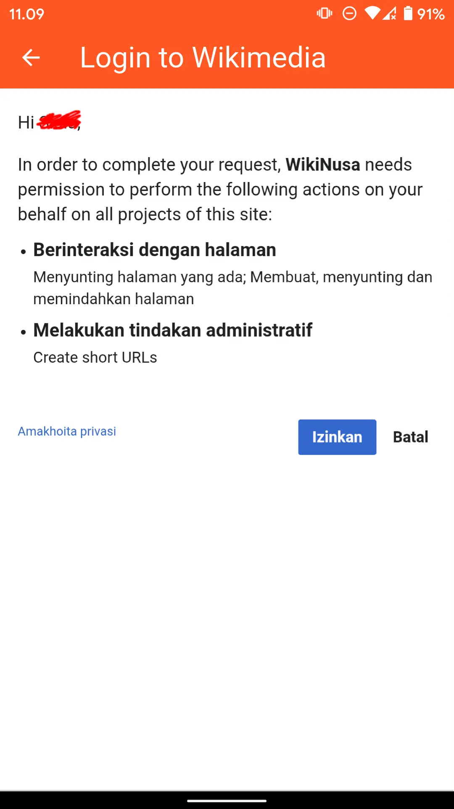
Mengizinkan akses ke Wikimedia - Klik pada tombol Izinkan (lihat gambar di atas).
Kini Anda telah masuk dan siap menyunting halaman wiki di dalam aplikasi secara langsung tanpa dialihkan lagi ke peramban eksternal.
Catatan: Bila Anda belum login dengan cara ini, Anda akan melihat pesan untuk login di kala menyunting halaman. Namun Anda juga bisa memilih untuk menyunting di peramban eksternal.
Orientasi Halaman Depan
-
Pencarian di bagian atas: Di bagian header ada tempat untuk mencari tulisan. Masukkan kata kunci di kolom
Alui...Di bagian header ada tempat untuk mencari tulisan. Masukkan kata kunci di tempat "Alui..." -
Badan Halaman Depan:
SURA AMILITAuntuk tulisan pilihan,GAMBARA AMILITAuntuk gambar pilihan,SALUA FÖNAuntuk bulan ini dalam sejarah, danHADIA Ö'ILAuntuk Tahukah Anda.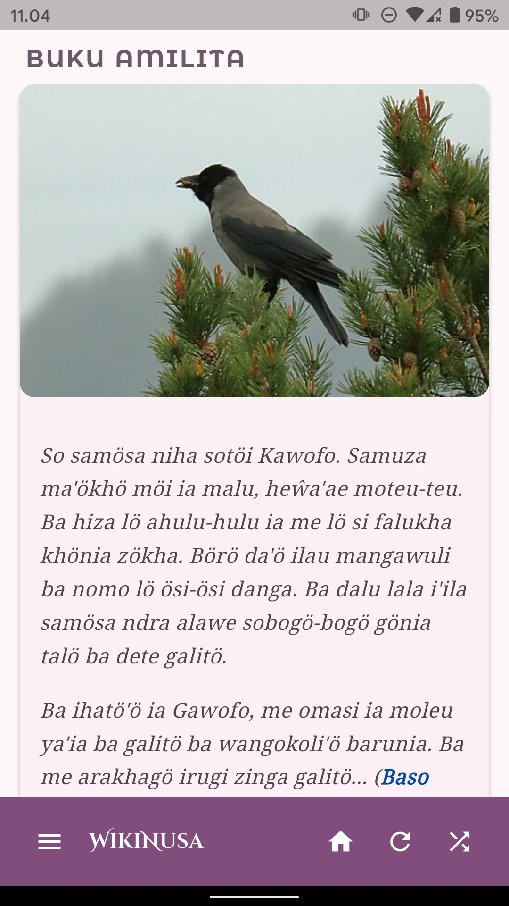
Contoh BUKU AMILITA di Wikibuku
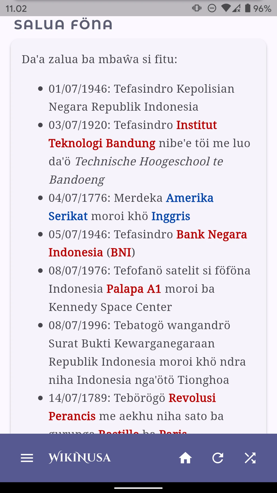
Contoh SALUA FÖNA di Wikipedia
Berbagai Fitur WikiNusa
Bagaimana memulai tulisan baru?
Ada dua cara:
- Pertama dengan menekan tombol BÖRÖGÖ di akhir Halaman Depan aplikasi.
- Kedua, dengan membuka laci menu samping dan menekan pada Fazökhi Zura Sibohou di pintasan cepat KHAI-KHAI SALIO.
Seterusnya akan muncul formulir penulisan, yang berbeda-beda tampilannya sesuai dengan jenis wiki (Wikipedia, Wikikamus, Wikibuku).
Bagaimana menyunting tulisan yang telah ada?
Dari halaman artikel, yakni ketika tulisan sedang ditayangkan, tekan pada IKON PENSIL di Tombol Aksi Mengambang.
Bila tulisan yang dimaksud belum tampil, cari terlebih dahulu melalui kolom pencarian di Halaman Depan dengan memasukkan kata kunci yang relevan.
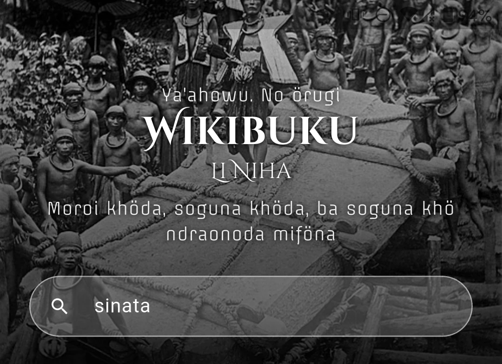
Contoh mencari kata sinata di WikibukuBagaimana mencari kata atau tulisan?
- Pergi ke Halaman Depan.
- Masukkan kata kunci tulisan yang dicari pada kolom pencarian.
Bagaimana menandai tulisan yang disukai?
Klik pada ikon PENANDA tulisan atau BOOKMARK di Tombol Aksi Mengambang di bagian bawah jendela artikel. Menandai tulisan hanya bisa dilakukan di halaman artikel ketika artikel tersebut sedang ditayangkan.
Mengapa saya perlu login ke Wikimedia?
Tidak wajib. Anda hanya perlu login apabila ingin menyunting tulisan secara langsung dari dalam aplikasi. Suntingan juga tetap bisa Anda lakukan melalui peramban web eksternal tanpa login di aplikasi.
Penyuntingan
Bagaimana membuat huruf tebal?
Apit kata yang ingin ditebalkan dengan tiga tanda petik tunggal ('''), misalnya '''ini tulisan tebal'''. Atau jika menggunakan papan ketik Nusa Keyboard, Anda tinggal menekan tombol kode wiki yang bersangkutan di barisan atas papan ketik.
Bagaimana membuat huruf miring?
Apit kata yang ingin dimiringkan dengan dua tanda petik tunggal (''), misalnya ''ini tulisan miring''. Atau jika menggunakan papan ketik Nusa Keyboard, Anda tinggal menekan tombol kode wiki yang bersangkutan di barisan atas papan ketik.
Bagaimana membuat subjudul?
Apit subjudul yang bersangkutan dengan tanda sama dengan (=). Untuk subjudul tingkat dua, gunakan dua tanda sama dengan (==), tingkat tiga gunakan tiga tanda (===), dan seterusnya. Contoh:
== Ini subjudul ==Bagaimana membuat pranala/khai-khai?
Apit kata tersebut dengan tanda kurung siku ganda ([[...]]), misalnya [[Faulo]]. Bila artikel tujuan dan kata yang ingin ditampilkan berbeda, gunakan pemisah tanda pipa (|), misalnya:
Ono [[sibaya|zibaya]](kata pertama di dalam kurung siku adalah halaman tujuan yaitu "sibaya", disusul tanda pipa, lalu kata yang ditampilkan di dalam tulisan yaitu "zibaya").
Bagaimana mengirim pesan umum?
Mohon menulis pesan umum di halaman Monganga Afo yang disediakan di setiap wiki (Lihat pintasan di Menu Samping aplikasi). Ini halaman resmi untuk diskusi di wiki. Kami menggunakan WhatsApp Group hanya untuk mengakomodasi anggota yang kurang mahir menulis di Wiki.
Bagaimana mengirim pesan kepada pengguna tertentu?
Untuk mengirim pesan kepada pengguna tertentu, kunjungi halaman pembicaraan pengguna tersebut. Misalnya jika nama penggunanya adalah Katitira, maka halaman pembicaraan yang dituju adalah Huhuo_zangoguna:Katitira.
Di mana biasanya ada pengumuman?
Pengumuman biasanya disematkan di halaman Monganga Afo di setiap wiki (Lihat pintasan di Menu Samping aplikasi).
Pada wiki berbahasa Nias, pengumuman juga bisa ditulis di halaman Angombakhata yang ada di setiap wiki berbahasa Nias (Lihat pintasan di Menu Samping aplikasi).
Di mana saya bisa mencoba-coba menulis?
Anda bisa sekadar mencoret-coret dan belajar mempraktikkan kode di halaman coretan Nahia wamakori yang tersedia di setiap wiki (Lihat pintasan di Menu Samping aplikasi).
Wikipedia
Apa beda Wikipedia dan Wikikamus?
Wikikamus adalah tempat mencari makna kata (definisi). Selain itu, sering disertakan juga contoh kalimat, pelafalan, dan asal kata.
Wikipedia berisi uraian tentang suatu subjek, konsep, tokoh, atau peristiwa secara jauh lebih panjang dan mendalam. Jika kamus sifatnya mendefinisikan kata secara singkat, ensiklopedia (Wikipedia) memberikan penjelasan komprehensif, konteks sejarah, serta berbagai rincian terkait lainnya.
Wikikamus
Bagaimana menandai dialek, agama, dlsb.?
Untuk menandai hal-hal tersebut digunakan templat. Misalnya untuk menandai suatu kata sebagai dialek Nias Selatan, Anda bisa menyisipkan {{sel}} di depan keterangan tersebut. Untuk menandai kata yang khusus digunakan dalam konteks Gereja Katolik, sisipkan {{kat}} di depan kata tersebut.
Daftar lengkap templat yang paling umum digunakan dapat diakses di: Wikikamus Nias: Ngawalö templat.
Bagaimana memasukkan gambar?
Diperlukan nama berkas gambar dan keterangan gambar (caption). Misalkan ada berkas gambar bernama hilimondregeraya.png, maka cara menyisipkannya dalam tulisan adalah:
[[Berkas:hilimondregeraya.png|jmpl|Kampung Hilimondregeraya, Nias Selatan]]Bagaimana memasukkan berkas pengucapan?
Subjudul pengucapan kata di kamus diletakkan di bagian atas definisi. Formatnya adalah {{IPA|ipa=|audio=NAMA-BERKAS-AUDIO}}.
Misalkan nama berkas audio pengucapan ialah fahalö.ogg, maka penulisannya adalah:
{{IPA|ipa=|audio=fahalö.ogg}}Apa itu Daha wehede?
Daha wehede adalah kata-kata jadian yang dibentuk dari akar kata/kata dasar yang sama. Misalnya akar kata fuli memiliki cabang kata seperti mamuli, fuli'ö, angawuli, dan sebagainya. Semua kata jadian ini masih memiliki hubungan makna yang sangat dekat dengan kata dasarnya.
Apa itu Fehede si fakhai?
Fehede si fakhai adalah kata bentukan yang maknanya menyimpan dari kata dasar. Misalkan kata dasar adalah bua, maka fehede si fakhai adalah ebua (besar), karena kata tersebut tidak lagi memiliki kemiripan makna langsung dengan kata "bua" (buah). Demikian pula kata abua (berat).
Wikibuku
Apa saja bisa dimuat di Wikibuku?
Semua jenis tulisan panjang lainnya yang tidak memenuhi kriteria sebagai artikel ensiklopedia di Wikipedia atau entri kata di Wikikamus. Di Wikibuku Anda bisa memuat teks lagu, hoho, hendri-hendri, cerpen, novela, dongeng, blog, paper ilmiah, opini, buku pelajaran, dan lain sebagainya.